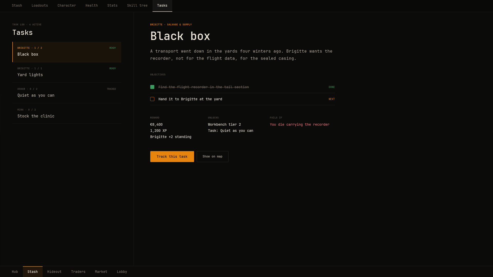
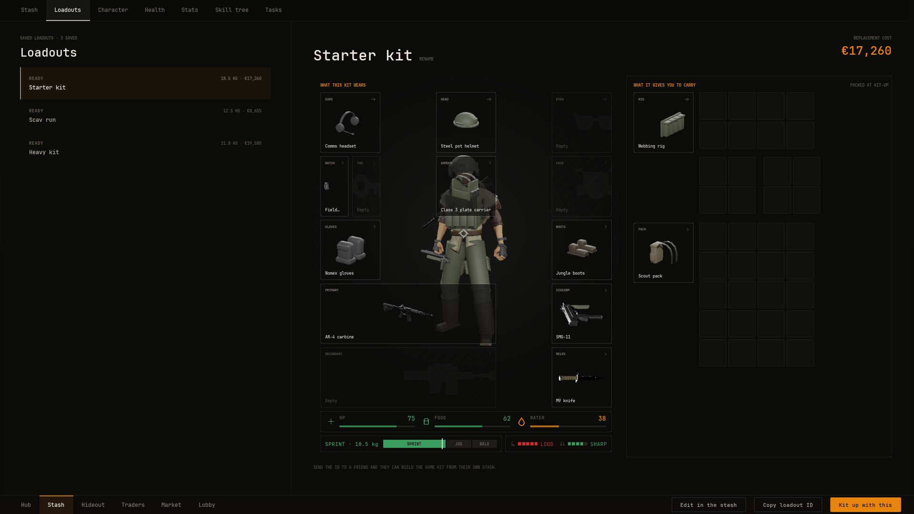

Tasks and loadouts
Tasks are jobs a trader gives, such as bringing back an item for a reward. Loadouts are named kits the player can put on in one click. Both are data assets, and with an Inventory component on the player's pawn both work with no code.
Write a task#
Create a Task Definition data asset per task. It shows among its giver's jobs on the trade screen and in the task log.
- Title, Description
- The task's name and its paragraph.
- Giver
- The Trader Definition that offers it. A task with no giver is listed under the settlement and is not offered by any trader.
- Requirement
- A line shown before the player takes it, such as
LOYALTY 2. It is shown only, and does not stop the player taking the task. - Objectives
- The steps. Each has Text, and optionally an Item and a Count.
- Reward Cash, Reward Xp
- What handing in pays and the experience shown.
- Reward Lines, Unlocks, Fails If
- Further lines for the task sheet, such as
Brigitte +2 standing. Empty Fails If reads as no time limit.
A step that names an item is met when the player's inventory holds Count of it, stash included. Steps are met in order, and a closing step with no item, such as Hand it to Brigitte, is the hand in itself. A task is ready once every item it asks for is in hand.
The demo's Black box task, given by Brigitte:
| Field | Value |
|---|---|
| Requirement | LOYALTY 2 |
| Objectives | Find the flight recorder in the tail section (Flight recorder ×1), then Hand it to Brigitte at the yard |
| Reward | 8,400 cash and 1,200 XP |
| Reward Lines | Brigitte +2 standing |
| Unlocks | Workbench tier 2, Task: Quiet as you can |
| Fails If | You die carrying the recorder |
Steps your game reports#
A step with no Item is something the player does in the game, such as surviving a run. Blackline cannot see that happen, so your game reports it with Advance Task Step (Task Id, Step Index, Amount). The step is done once it reaches its Count, and the task log shows progress such as 1 / 2. Steps count from 0. Only a task the player has taken moves. Get Task Step Progress reads how far a step has got.
The last step, when it has no item, is the hand-in itself and needs no report. The demo's Quiet as you can works this way: its extract event calls Advance Task Step for step 0 each time the player gets out of Silt Yards, and after two runs the job reads READY TO HAND IN.
Take and hand in#
The player deals with tasks in the jobs view of the giver's trade screen. A job moves through these states:
- The job reads
ON OFFER. The action button raisesJob.Take. - Once taken it reads
IN PROGRESS, with a progress meter for its counted item, such as 0 / 1. - When the player holds every item it asks for, it reads
READY TO HAND IN. The button now raisesJob.HandIn. - Handing in takes the items out of the player's inventory, pays Reward Cash once, and the job reads
TURNED IN.
A job taken while the items are already in hand is ready at once. Every screen that shows the task hears the request, and it is applied only once. Task state lasts for the play session and is not written to a save game.
The task log#
The task log (W_TaskLog) lists every task with its state: IN PROGRESS once taken, READY whenever the items it asks for are in hand, and HANDED IN at the end. Choosing one shows its steps, each DONE, active with its count such as 0 / 3, or LOCKED, and its sheet with the giver, reward, unlocks and fail conditions.

Two buttons act on the task in focus:
- Track
- Raises
Task.Track. The task becomes the tracked one, which the raid HUD's navigation group shows with its next step. - Show on map
- Raises
Task.ShowOnMap. Blackline does not answer it, so your game decides what the map shows.
Handing in happens at the trader, not in the log.
Loadouts#
A Loadout Definition is a named kit. The loadout library lists every one in sort order.
- Display Name, Description
- The kit's name and the line under it.
- Items
- What the kit holds. Each item has a Count and says where it goes.
Where each item goes is set by the first of these that applies:
- Equip Slot
- Worn in that slot, such as
NVS.View.Slot.Primary. - Fitted To Slot
- Fitted to the weapon the kit wears in that slot, such as a magazine in the primary.
- Packed In Slot, Packed Grid
- Packed inside what the kit wears in that slot, such as
NVS.View.Slot.Pack. Packed Grid picks a rig's pouch, counted from zero. - Container
- A base container of the inventory, such as
Stash. None takes the first with room.
The editor flags a packed item with nothing worn to go in, or one too big for the grid it names. The demo's Scav run wears an AR-4, a rig, a pack, a secure case and boots, fits an AR-4 magazine, packs three more magazines in the rig's first pouch and a splint in its third, and puts bandages, rations and water in the pack.
The Inventory component's Starting Loadout gives a kit when play begins, on top of its Starting Items. The demo starts the player with its Starter kit.
Kit up#
In the loadout library (W_LoadoutLibrary), the player picks a kit and presses Kit up with this. The screen raises Loadout.Apply, and the Inventory component kits the player up from what they own:
- Each worn piece is taken from the stash and put on. Whatever was worn in that slot goes back to the stash.
- Each fitted part is taken from the stash and fitted.
- Each packed item is moved from the stash into its bag or pouch until the count is met.
Nothing is bought. A toast reads Kitted up with the kit's name, and says how many pieces were not in the stash. In Blueprint, Kit Up on the Inventory component does the same and returns that count.

Saved kits#
The stash screen's save button raises Loadout.Save, which adds Saved kit 1, Saved kit 2 and so on to the library and opens it. Each one records what the player wears at that moment: the worn pieces, the parts fitted to worn weapons and what is packed in worn bags. Kit up on a saved kit puts the same kit back on from the stash.
In Blueprint, Capture Loadout on the Inventory component writes the worn kit into any Loadout Definition you pass it.
Result#
In the demo, open Traders, choose Brigitte and open her jobs. Take Black box. The starter kit already put a flight recorder in your stash, so the job reads READY TO HAND IN straight away. Hand it in: the recorder leaves your inventory, 8,400 is added to your cash and the task log reads HANDED IN. Then open Loadouts, pick Heavy kit and press Kit up with this. The KA-47 from your stash goes on in the primary slot with a KA-47 magazine fitted, the carbine goes back to the stash, and the toast says how many pieces your stash did not have.